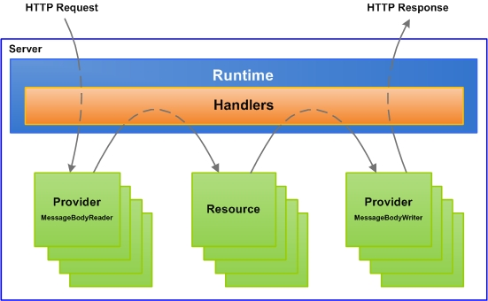

Apache Wink Server Module
The following section describes the Apache Wink Server and provides a detailed description of the Apache Wink Server component and its functionality.
Apache Wink Server Overview
The Apache Wink Server module is a complete implementation of the JAX-RS v1.0 specification. In addition to the core implementation, the Wink Server module provides a set of additional features that are designed to facilitate the development of RESTful Web services. The framework is easy to extend and to enrich with new functionality.
Main Features
The Apache Wink Server main features are as follows:
- Is a complete implementation of the JAX-RS v1.0 specification
- Provides out-of-the-box Java object models for Atom, Json, RSS, APP, CSV, HTML, Multipart and OpenSearch along with providers to serialize and deserialize these models
- Highly configurable and flexible runtime functionality
- Provides a Handlers mechanism for manipulation of HTTP request and response messages
- Automatic generation of APP document for collection resources
- Spring integration
- Provides support for WebDAV through the WebDAV extension
- Provides an in-depth administration view of the runtime registries
Apache Wink High Level Server Architecture Overview
The following diagram illustrates the general architecture of the Apache Wink server runtime.

The Apache Wink server runtime layer receives incoming HTTP requests from the hosting container. Once a request is received the Apache Wink server runtime initiates a new request session by creating a message context that is passed through the handlers chain which consists of system and user defined handlers.
Initially the runtime passes the message context through the handlers responsible for finding the resources and resource methods that match the request according to the JAX-RS specification. If required, the incoming request is de-serialized using the appropriate provider. Once the injectable parameters are ready for injection the matched resource method is invoked and the returned response object is then passed through the handler chain in order to select and activate the appropriate provider for serialization as the HTTP response.
{kind=link}
{kind=link}
{kind=link}
{kind=link}
{kind=link}
{kind=link}
{kind=link}
{kind=link}
{kind=link}
{kind=link}